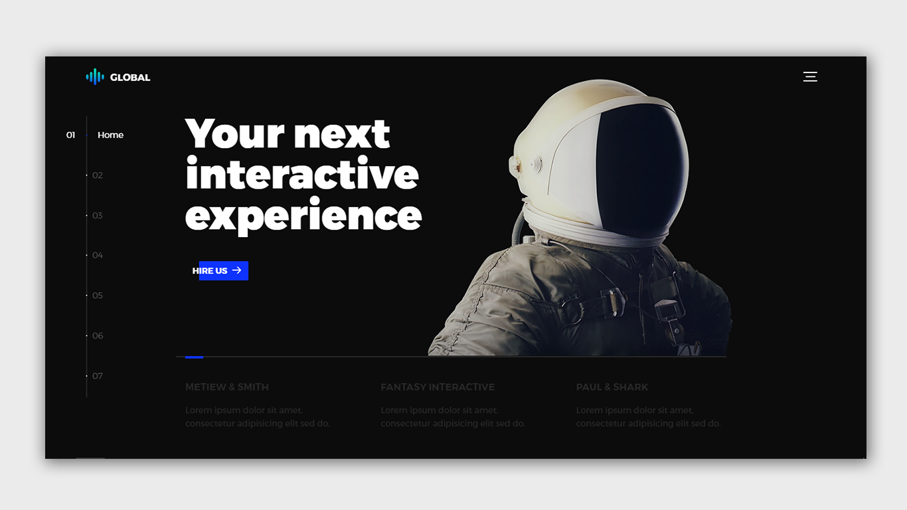
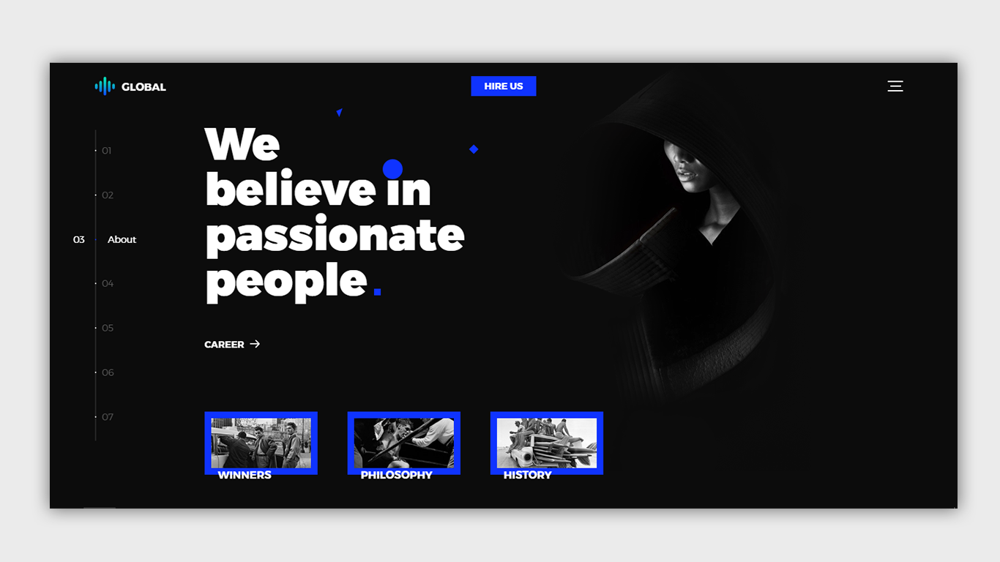
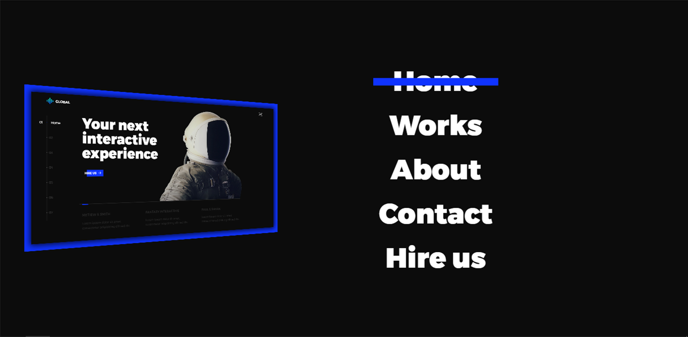

Тестовое задание. Верстка и перенос сайта на WordPress
Global


Описание проекта
Тестовое задание, которое предоставила одна из Днепропетровских компаний. Суть его заключалась в том, что необходимо было сверстать одностраничный сайт и перенести его на WordPress с возможностью редактирования данных через админ-панель.
Это задание я выполнила с помощью плагина Custom Fields (некоторые текстовые поля, заголовки, слайдер) и php.

Технологии, которые были задействованы:
- HTML/CSS3
- Custom Fields
- WordPress
- Jquery
- PHP